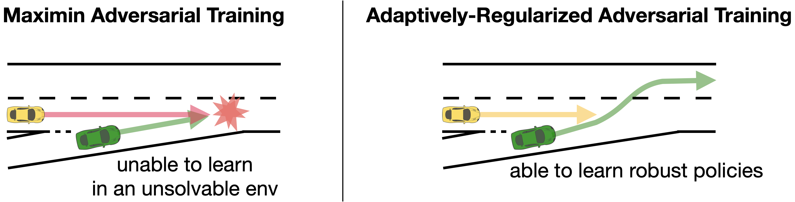
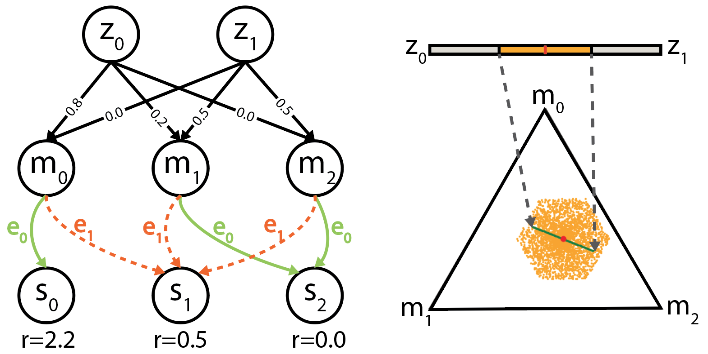
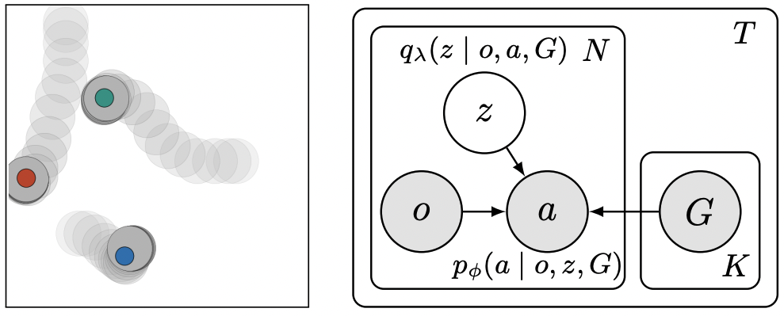
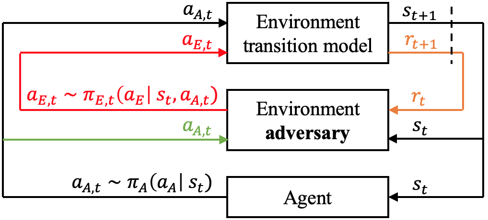

|
Peide Huang
I am a second-year Ph.D. student advised by Prof. Ding Zhao @ SafeAI Lab and co-advised by Prof. Fei Fang @ AI and Social Good Lab at Carnegie Mellon University. Prior to joining CMU, I received my Bachelor's degree from Nanyang Technological University, Singapore and Master's degree from Stanford University.
My research goal is to understand the interaction between the reinforcement learning agent and the tasks, with the objective to enable robust, safe, and explainable decision making. To achieve this goal, I leverage curriculum learning, representation learning, and game theory. I also tackle real-world applications in robotics and autonomous driving.
Email /
CV /
Google Scholar /
Twitter /
Github
|
|
|

|
Robust Reinforcement Learning as a Stackelberg Game via Adaptively-Regularized Adversarial Training
Peide Huang, Mengdi Xu,
Fei Fang,
Ding Zhao
Preprint, under review
bibtex
|
|

|
Group Distributionally Robust Reinforcement Learning
Mengdi Xu, Peide Huang, Visak Kumar, Jielin Qiu, Chao Fang, Kuan-Hui Lee, Xuewei Qi, Henry Lam, Bo Li,
Ding Zhao.
Preprint, under review
|
|

|
Latent Goal Allocation for Multi-Agent Goal-Conditioned Self-Supervised Imitation Learning
Peide Huang*,
Laixi Shi*,
Rui Chen*. Equal contribution
bibtex
NeurIPS 2021 Workshop in Bayesian Deep Learning.
Workshop
|
|

|
Accelerated Policy Evaluation: Learning Adversarial Environments with Adaptive Importance Sampling
Mengdi Xu,
Peide Huang,
Fengpei Li,
Jiacheng Zhu,
Xuewei Qi,
Kentaro Oguchi,
Zhiyuan Huang,
Henry Lam,
Ding Zhao
Preprint, under review
bibtex
Abridged in ICLR 2021 Workshop in Security and Safety in Machine Learning Systems.
Workshop /
Poster
|
|
2/4/2022: I just passed my Ph.D. qualification exam!
|
|
{kind=link}